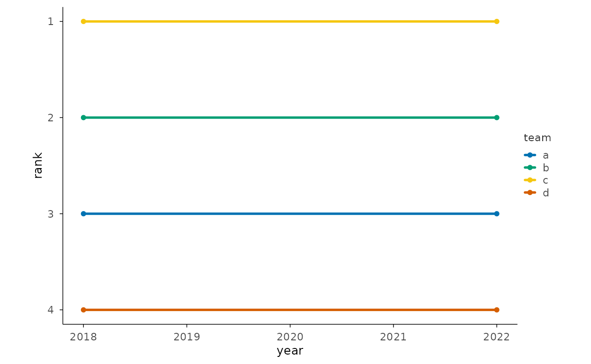
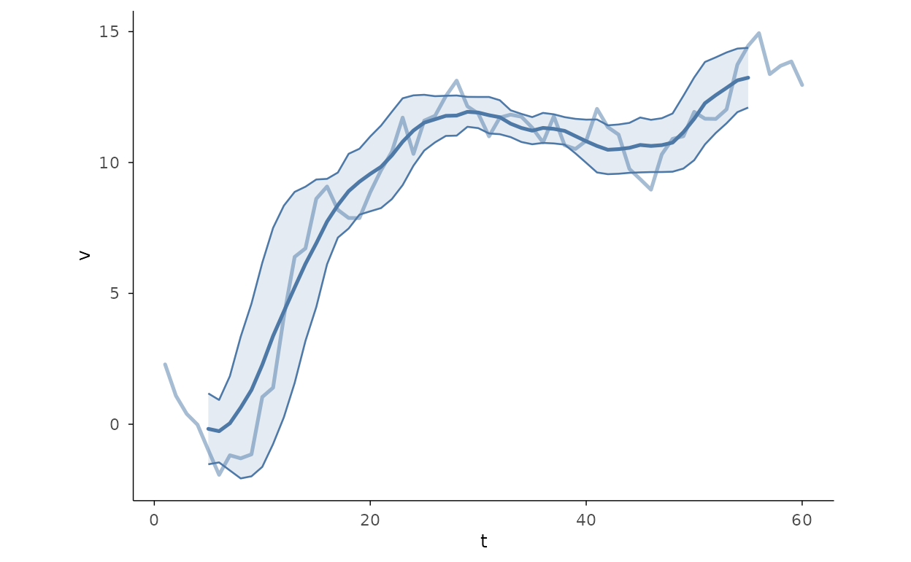
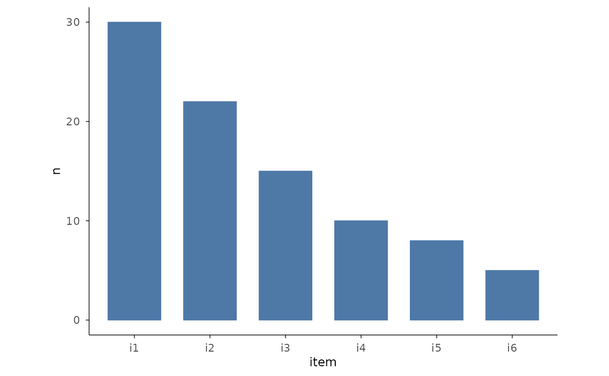
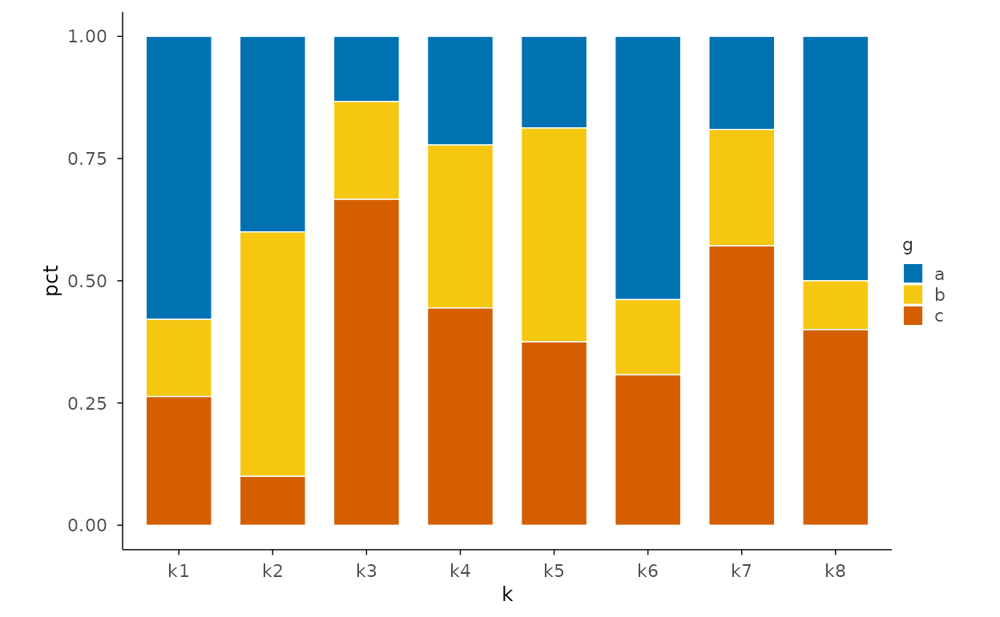
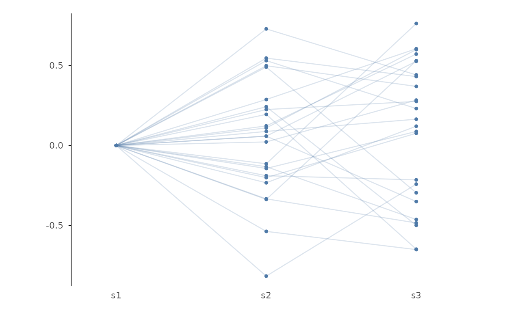

本页解决什么问题：Data-shaped recipes before plotting: pivots, rolling, summaries. 前置：已完成 gallery-composing
下一步：→ use-case-bioinformatics
Data-prep recipes that feed the pipeline (the Vega-Lite “Advanced Calculations” slot). Each shows the dplyr preprocessing step plus the plotit pipeline consuming it.
Rank / bump (R-08)
set.seed(7)
df <- data.frame(
year = rep(c(2018, 2022), each = 4),
team = rep(letters[1:4], 2),
score = c(70, 80, 90, 60, 75, 85, 95, 65)
)
df |>
dplyr::group_by(year) |>
dplyr::mutate(rank = dplyr::row_number(dplyr::desc(score))) |>
dplyr::ungroup() |>
plotit(encode(x = year, y = rank, group = team, colour = team)) |>
mark_line() |>
mark_point() |>
scale_y(trans = "reverse")
Rolling statistics (bollinger-style band, R-11)
set.seed(7)
ts <- data.frame(t = 1:60, v = cumsum(rnorm(60)))
# Center-aligned rolling window helper (equivalent to
# zoo::rollmean(x, k, fill = NA): window centred, edges NA).
roll_center <- function(x, k, fun) {
# Same window indices as zoo::rollapply(x, k, fun, align = "center"):
# value i uses x[i - floor((k-1)/2) .. i + ceiling((k-1)/2)].
n <- length(x)
lo_off <- floor((k - 1) / 2)
hi_off <- ceiling((k - 1) / 2)
out <- rep(NA_real_, n)
for (i in seq_len(n)) {
lo <- i - lo_off
hi <- i + hi_off
if (lo >= 1 && hi <= n) out[i] <- fun(x[lo:hi])
}
out
}
ts$ma <- roll_center(ts$v, 10, mean)
ts$sd <- roll_center(ts$v, 10, sd)
ts |>
plotit(encode(x = t, y = v)) |>
mark_line(alpha = 0.5) |>
mark_line(mapping = encode(y = ma), colour = "#4E79A7") |>
mark_ribbon(mapping = encode(ymin = ma - sd, ymax = ma + sd), alpha = 0.15)
#> Warning: Removed 9 rows containing missing values or values outside the scale range
#> (`geom_line()`).
#> Warning: Removed 9 rows containing missing values or values outside the scale range
#> (`geom_ribbon()`).
Cumulative share (Pareto-style)
df <- data.frame(item = paste0("i", 1:6), n = c(30, 22, 15, 10, 8, 5))
df$cum <- cumsum(df$n) / sum(df$n)
df |>
plotit(encode(x = item, y = n)) |>
mark_bar() |>
mark_line(mapping = encode(y = cum * max(df$n)), colour = "#E15759")
#> Warning: Use of `df$n` is discouraged.
#> ℹ Use `n` instead.
#> `geom_line()`: Each group consists of only one observation.
#> ℹ Do you need to adjust the group aesthetic?
Normalised / percentage stack (R-01)
set.seed(7)
d <- data.frame(
g = rep(letters[1:3], each = 8),
k = rep(paste0("k", 1:8), 3),
v = rpois(24, 5)
)
d |>
dplyr::group_by(k) |>
dplyr::mutate(pct = v / sum(v)) |>
dplyr::ungroup() |>
plotit(encode(x = k, y = pct, fill = g)) |>
mark_bar(position = "stack")
Recentering helper (parallel-coordinate basis, stage 4)
set.seed(7)
pc <- data.frame(id = 1:25, s1 = rnorm(25), s2 = rnorm(25, 2), s3 = rnorm(25, 5))
pc |>
plotit(encode(group = factor(id))) |>
project_parallel(columns = c("s1", "s2", "s3"), recenter = "s1")